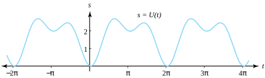
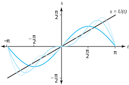
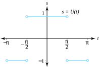
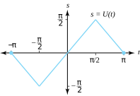
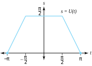
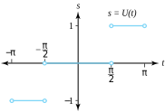

In this chapter we show how Fourier series, the Fourier transform, and the Laplace transform are related to the study of complex analysis. We develop the Fourier series representation of a real-valued function \(U(t)\) of the real variable \(t\text{.}\) Complex Fourier series and Fourier transforms are then discussed. Finally, we develop the Laplace transform and the complex variable technique for finding its inverse. This chapter focuses on applying these ideas to solving problems involving real-valued functions, so many of the theorems throughout are stated without proof.
Let \(U(t)\) be a real-valued function that is periodic with period \(2\pi\text{,}\) that is,
\begin{equation*}
U(t+2\pi)=U(t) \text{ for all } t\text{.}
\end{equation*}
One such function is \(s= U(t) = \sin(t-\frac{\pi}{2}) + 0.7\cos(2t-\pi -\frac{1}{4}) +1.7\text{,}\) and its graph is obtained by repeating the portion of the graph in any interval of length \(2\pi\text{,}\) as shown in Figure 11.1.1.

Figure11.1.1.A function \(U\) with period \(2\pi\)
Familiar examples of real functions that have period \(2\pi\) are \(\sin nt\) and \(\cos nt\text{,}\) where \(n\) is an integer. This raises the question whether any periodic function can be represented by a sum of terms involving \(a_n\cos nt\) and \(b_n\sin nt\text{,}\) where \(a_n\) and \(b_n\) are real constants. As we shall soon see, the answer to this question is often yes.
Definition11.1.2.Piecewise Continuous.
The function \(U\) is piecewise continuous on the closed interval \([a,b]\) if there exists values \(t_0,t_1,\ldots,t_n\) with \(a = t_0\lt t_1\lt \cdots\lt t_n=b\) such that \(U\) is continuous in each of the open intervals \(t_{k-1}\lt t\lt t_k(k=1,2,...n)\) and has left- and right-hand limits at the values \(t_k\) for \(k=0,1,\ldots, n\text{.}\)
We use the symbols \(U(a^-)\) and \(U(a^+)\) for the left- and right-hand limits, respectively, of a function \(U(t)\) as \(t\) approaches the point \(a\text{.}\) The graph of a piecewise continuous function is illustrated in Figure 11.1.3.
The factor \(\frac{1}{2}\) in the constant term \(\frac{a_0}{2}\) on the right side of Equation (11.1.1) has been introduced for convenience so that \(a_0\) could be obtained from the general formula in Equation (11.1.2) by setting \(j=0\text{.}\) The reasons for this will be explained shortly. The next result discusses convergence of the Fourier series.
Theorem11.1.5.Fourier Expansion.
Assume that \(S(t)\) is the Fourier series for \(U(t)\text{.}\) If \(U\,'(t)\) is piecewise continuous on \([-\pi ,\pi]\text{,}\) then \(S(t)\) is convergent for all \(t \in [-\pi,\pi ]\) where \(U(t)\) is continuous. If \(t=a\) is a point of discontinuity of \(U\text{,}\) then
Show that the function \(U(t) =\frac{t}{2}\) for \(t \in (-\pi ,\pi)\text{,}\) extended periodically by the equation \(U(t+2\pi)=U(t)\text{,}\) has the Fourier series expansion
\begin{equation*}
U(t) = \sum_{n=1}^{\infty}\frac{(-1)^{n+1}}{n}\sin nt
\end{equation*}
Substituting the coefficients \(a_j\) and \(b_j\) in Equation (11.1.1) produces the required solution. The graphs of \(U(t)\) and the first three partial sums \(S_1(t) = \sin t, \, S_2(t) = \sin t-\frac{1}{2}\sin 2t\text{,}\) and \(S_3(t) = \sin t-\frac{1}{2}\sin 2t + \frac{1}{3}\sin 3t\) are shown in Figure 11.1.7.

Figure11.1.7.\(U(t) =\frac{t}{2}\text{,}\) and approximations \(S_1(t), \ S_2(t)\text{,}\) and \(S_3(t)\)
We now state some general properties of Fourier series that are useful for calculating the coefficients. The proofs are left for the reader.
Theorem11.1.8.
If \(U(t)\) and \(V(t)\) have Fourier series representations, then their sum \(W(t)=U(t)+V(t)\) has a Fourier series representation, and the Fourier coefficients of \(W\) are obtained by adding the corresponding coefficients of \(U\) and \(V\text{.}\)
Theorem11.1.9.Fourier Cosine Series.
Assume that \(U(x)\) is an even function. If \(U(t)\) has period \(2\pi\text{,}\) and \(U(t)\) and \(U\,'(t)\) are piecewise continuous, then the Fourier series for \(U(t)\) involves only the cosine terms, i.e., \(b_n=0\) for all \(n\text{:}\)
Assume that \(U(t)\) is an odd function. If \(U(t)\) has period \(2\pi\) and if \(U(t)\) and \(U\,'(x)\) are piecewise continuous, then the Fourier series for \(U(t)\) involves only sine terms, i.e., \(a_n=0\) for all \(n\text{:}\)
If \(U(t)\) has a Fourier series representation given in Equation (11.1.4), then the integral of \(U(t)\) has a Fourier series representation which can be obtained by termwise integration of the Fourier Series of \(U(t)\text{,}\) that is,
Show that the function \(U(t) = |t|\) for \(t \in (-\pi ,\pi)\text{,}\) extended periodically the equation \(U(t+2\pi) =U(t)\text{,}\) has the Fourier series representation
Using the \(a_n\) and Theorem 11.1.9 produces the required solution.
Subsection11.1.1Proof of Euler’s Formulas
The following intuitive proof will justify the Euler formulas given in Equations (11.1.2) and (11.1.3) To determine \(a_0\) we integrate both \(U(t)\) and the Fourier series representation in Equation (11.1.1) from \(-\pi\) to \(\pi\text{,}\) which results in
The value of the first integral on the right side of this equation is \(2\pi\) and all the other integrals are zero. Hence we obtain the desired formula for \(a_0\text{:}\)
To determine \(a_m\text{,}\) we let \(m>1\) denote a fixed integer and multiply both \(U(t)\) and the Fourier series representation in Equation (11.1.1) by the term \(\cos mt\text{,}\) and then we integrate and obtain
\begin{equation*}
\int_{-\pi}^{\pi}U(t)\cos mt\,dt=\pi a_m \text{ for } m=0,1,2, \ldots\text{,}
\end{equation*}
and Equation (11.1.2) is established. We leave it as an exercise to establish Euler’s Formula (11.1.3) for the coefficients \(\left\{ b_n\right\}\text{.}\) A complete discussion of the details of the proof of Theorem 11.1.5 can be found in some advanced texts. See for instance, John W. Dettman, Chapter 8 in Applied Complex Variables, The Macmillan Company, New York, 1965.
ExercisesExercises
(a)
For Exercises 1–2 and 6–11, find the Fourier series representation.
\begin{enumerate}
(b)
\(U(t) = \begin{cases}1 \;\;\, \text{ for } 0\lt t\lt \pi, \\ -1 \text{ for } -\pi \lt t\lt 0. \end{cases}\) See Figure 11.1.14.
For Exercise 1, set \(t=\frac{\pi}{2}\) and conclude that \(\frac{\pi}{4}=\sum\limits_{j=1}^{\infty}\frac{(-1)^{j-1}}{2j-1}\text{.}\)
(f)
For Exercise 2, set \(t=0\) and conclude that \(\frac{\pi^2}{8} = \sum\limits_{j=1}^{\infty}\frac{1}{(2j-1)^2}\text{.}\)
Solution.
\(\frac{\pi }{2} = V(0) = \frac{4}{\pi}\sum\limits_{n=1}^{\infty} \frac{1}{(2n-1)^2}\cos(0)=\frac{4}{\pi }\sum\limits_{n=1}^{\infty}\frac{1}{(2n-1)^2}\text{.}\) Now solve for \(\sum\limits_{n=1}^{\infty}\frac{1}{(2n-1)^2}\text{.}\)
(g)
\(U(t) = \begin{cases}-1 \text{ for } \frac{\pi}{2} \lt t \lt \pi, \\ \;\;\, 1 \text{ for } -\frac{\pi}{2}\lt t \lt \frac{\pi}{2}, \\ -1 \text{ for } -\pi \lt t \lt -\frac{\pi}{2}. \end{cases}\) See Figure 11.1.16.
(h)
\(U(t) = \begin{cases}\pi -t \text{ for } \frac{\pi}{2}\lt t\lt \pi, \\ t \text{ for } -\frac{\pi}{2}\lt t\lt \frac{\pi}{2}, \\ -\pi -t \text{ for } -\pi \lt t \lt -\frac{\pi}{2}. \end{cases}\) See Figure 11.1.17.

Figure11.1.16.Graph of \(U(t)\) for Exercise 6

Figure11.1.17.Graph of \(U(t)\) for Exercise 7Solution.
\(U(t) = \begin{cases}1 \;\;\, \text{ for } \frac{\pi}{2} \lt t \lt \pi, \\ 0 \;\;\, \text{ for } -\frac{\pi}{2}\lt t\lt \frac{\pi}{2}, \\ -1 \text{ for } -\pi \lt t \lt \frac{-\pi}{2}. \end{cases}\) See Figure 11.1.19.

Figure11.1.18.Graph of \(U(t)\) for Exercise 8

Figure11.1.19.Graph of \(U(t)\) for Exercise 9Solution.
\(U(t)=\frac{2}{\pi} \sum\limits_{n=1}^{\infty}\frac{1}{2n-1}\sin[(2n-1)t] - \frac{4}{\pi }\sum\limits_{n=1}^{\infty}\frac{1}{2(2n-1)}\sin[2(2n-1)t]\text{,}\) where \(a_n=0\) for all \(n\text{,}\) and \(b_{4n}=0\) for all \(n\text{.}\)
\(U(t)=\frac{2}{\pi} \sum\limits_{n=1}^{\infty }\frac{1}{2n-1}\sin[(2n-1)t] + \frac{4}{\pi}\sum\limits_{n=1}^{\infty }\frac{1}{2(2n-1)}\sin[2(2n-1)t]\text{,}\) where \(a_n=0\) for all \(n\text{,}\) and \(b_{4n}=0\) for all \(n\text{.}\)
(m)
Establish Euler’s Formula (11.1.3) for the coefficients \(\{b_n\}\text{.}\)